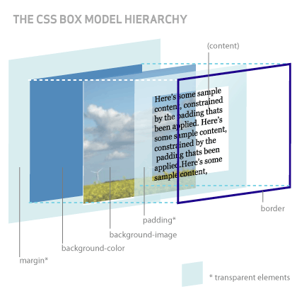

The 4 Boxes of the Box Model
- Content
- Paddin
- Border
- Margin
Content
The Content box is where all of your text, pictures, links, etc. appear. That is your 'content' and it is naturally at the center of the Box Model.
Padding
It can look crowded on a Web page to have different content sections right up against one another, so it is customary to add some padding - space that appears around the edges of your content. You can add the padding to each side independently (e.g., padding-left) or you can combine your padding for all four sides in a single declaration.
Border
Borders are lines or other graphical markers drawn around your padding. Borders are, by default, rectangles with sharp corners, but you can use the border-radius property to round off those corners as much as you'd like. Borders can be rounded even if they are transparent, which has the effect of shaping the background color of the content and padding.
Margin
Margin is like padding for the border. It is space that exists around the outside edge of the border. Unlike padding, however, margins collapse under some circumstances - specifically, vertically-stacked margins will collapse together so that only the larger of the two margins is applied. This allows us to use margin as a centering property, and one of the most common margin settings is margin: 0 auto; which will take the selected element and center it from left-to-right without affecting elements above or below it.
